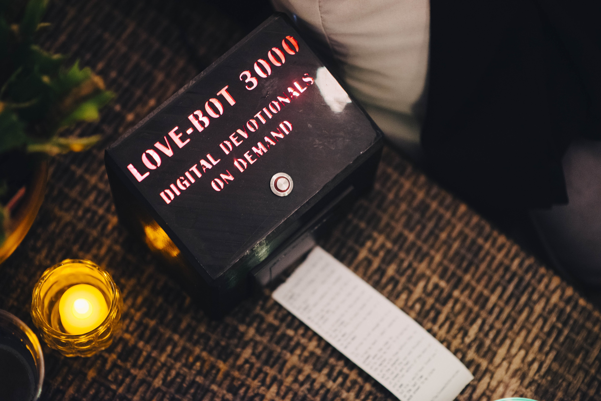

Lovebot-3000 is a computer I taught to love. Being in love is so complicated and confusing that we'll never be able to write a complete set of love poems. The closest we can get is to brute-force the problem and automate the process of writing romantic poetry. Lovebot-3000 uses a markov chain to produce love poems. The code was adapted for good from an evil ancestor of lovebot, MEGAGOD-3000, a robot that wrote divinely inspired prophecies for new cults and alien religions.
Photo By Katie Palatucci
A markov chain used to generate text is a naive but surprisingly effective approach to generating text. It's the same model that the predictive keyboard on your smartphone uses. So if all you ever wrote on your phone was romantic poetry, and you wrote a lot of it, this is what your keyboard may output. At its core a markov chain is just a huge graph where each node is one state and the weight of each path is your probablilty of traveling to that state next. In the context of generating text each node would be a specific word and it's connecected to all the words that are likely to follow it. This graph weighted connections has to be generated on a huge body of text called a corpus, but if that whole corpus is written in the same style you can pick up the writing style in the model.
All I had to do was get a large enough body of romantic poetry, Sufjan Stevens and Mitski lyrics to generate a good model. You can make your model even better by going further than 1 word deep. Lovebot uses a n=3 model so as its building a sentence it looks at the previous 3 words and says 'okay what's likely to follow this word, what's likely to come 2 words after this word, and what's likely to come 3 words after this word' and it uses all of that infomation to make a smart choice about the next word. Because of the nature of our language this can build new and sensible sentinces that aren't present in the corpus (the output is checked to not be directly copying anything in the corpus). One example of this working well is that a verb almost always follows a pronoun. All of the model generating was done using a great Python library by Jeremy Singer-Vine called Markovify. This library is super easy to set up and all you need is a good clean corpus. My cleaning script is on github but it's definitely not perfect, some junk still makes it out into the poems.
The case is pretty simple it's just some conections to a 5V jack that go to power the raspberry pi and the printer and the lights. The backlight glow of the letters was done with a red theatre gel and some white LED strips. It looks alright but I definitely want to improve my method of backlighting text for future projects. I cadded everything in Catia V5 because that's what I'm using at work now.
I brought the robot to my brothers wedding and everyone seemed to get a kick out of it. Now I think I'd like to leave it somewhere people can enjoy it but I'm not sure where.
Here's some of my favorite lines the lovebot came up with while I was developing it
i kissed her again and again and again and again and again and again under the endless sky
in you the wars and the flights accumulated from you the wings of a bird something of anguish and oblivion
look look he cried and pointed to the shape before his feet
do you love me now i count no more my lonesome years this blessed hour for all
my somber heart searches for you nevertheless and i love your eyes when the lies lit with a passionate fire
you are here intangible and you are sad all at once like a voyage
as he read last rough simple plea i wait my queens commands i much desire your servant
damn you creature i make you love me one word from you and i blame you if you want to bury me in your life my infinite dreams live
from the water from the home that ive wanted to write you a note and tell you all your dreams were true
but could we be what were meant to be a pest to anyone this time
onward and like the masts
all delight people raise their hands all delighted people raise their hands
because i love you more than i could have believed and i was so young when i behaved twenty five
and guarded by great guns out of the cloud by night
cross to me now for the west is a rose
oh lift me from the glen below
the twisted streets of london and the rumor of her wealth
as nothing can be changed
lapped by the crackling waves even as the strength of his arm
jul i would not for the world must love and part
the uses of my soul dyes your feet
and this maiden she lived with no other wish than to go on every morning
once more assailed the queen the death of a relative dear
for that life is patriarchy
cleaving the darkness round the gates of our earthmoulded senses
cross to me now for the west is a rose
oh lift me from the glen below
the twisted streets of london and the rumor of her wealth
as nothing can be changed
lapped by the crackling waves even as the strength of his arm
jul i would not for the world must love and part
the uses of my soul dyes your feet
and this maiden she lived with no other wish than to go on every morning
once more assailed the queen the death of a relative dear
for that life is patriarchy
cleaving the darkness round the gates of our earthmoulded senses
and be seen to love and be beloved
i love it when you look upon the bag
een death to die for englands sake
i just need someone to remember me
and like the shadow of the pines
of a telephone spreading it like a cloak on thine
the golden laws of love shall be purified by pain
upon you like a weapon
once more in the wind and drew
and look upon you and infest
I was able to finish this project fairly quickly because of some great online resources. The thermal printer was basically plug and play because of this Adafruit Tutorial and the code was mostly written for MEGAGOD I just had to make a new corpus.